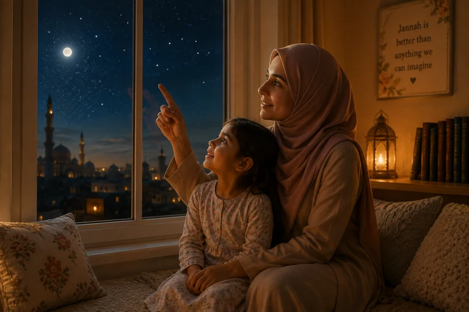
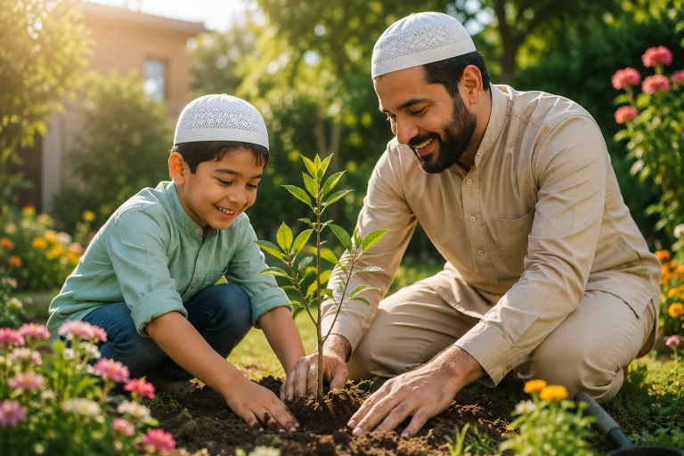
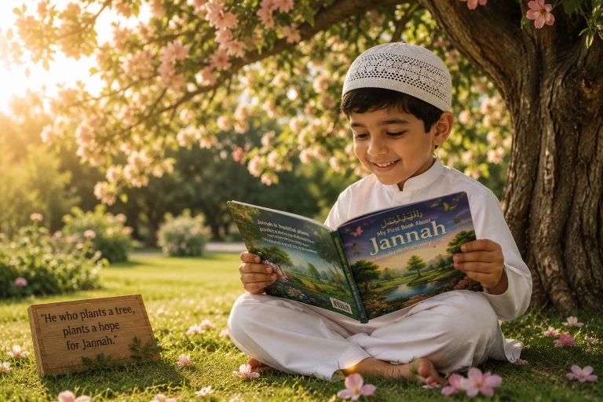

I still remember the exact moment my daughter first asked me about Jannah. It was a Tuesday night, past her bedtime, and I was folding laundry while she coloured in her little notebook. Without even looking up, she said: "Ammi, will there be pink horses in Jannah?" I froze. Not because the question was silly — but because I suddenly realised she was already building a picture of the Hereafter in her head, and I had no idea where she was getting it from. That night I sat her on my lap and we talked about the gardens, the rivers, and the biggest gift of all: seeing Allah. If you are a Muslim parent, some version of this conversation is coming to your house too. This guide is everything I wish someone had handed me before that Tuesday night.
📖 In This Guide, You'll Find:
- Why the Jannah conversation matters more (and comes earlier) than most parents think
- What the Quran and Sunnah actually say about Jannah — in child-sized language
- An age-by-age plan: toddlers (2-4), young kids (5-7), and older kids (8-12)
- 5 small home rituals that made Jannah feel real to my own children
- How to answer the hardest question: "Will I see Grandma in Jannah?"
- 4 honest mistakes I made as a parent, so you can skip them
🔑 Key Takeaways
- Children will imagine Jannah whether we guide them or not — better they hear it from us, gently, with the Quran in hand.
- Keep it wonder-filled: "no eye has seen it" is the most beautiful sentence you can teach a child.
- Pair every promise of Jannah with Allah's love, so worship never becomes only a transaction.
- Use nature, planting, and the full moon as your teaching tools — the Sunnah does the same.
- Hope (raja) is worship. For young children, lead with mercy, not fear.

The Question Every Muslim Parent Gets (Sooner Than You Think)
Most of us plan to talk about Jannah "when they're older." But children don't wait for our plans. By age four or five, they have already heard something — from a cartoon, a cousin, a bedtime story — and their young minds start filling in the blanks on their own. I would rather my children's first image of the Hereafter come from my lap, warm and gentle, than from somewhere I can't control.
There is also a deeper reason. In Islam, hope in Allah's mercy — raja — is itself an act of worship. A child who grows up excited about Jannah grows up loving Allah. And a child who loves Allah does not obey Him out of fear alone; they obey Him the way you run toward someone you love.
What the Quran & Sunnah Actually Tell Us — In Child Language
When I prepared for these conversations, I sat with my mushaf and wrote down only what is authentic, then translated each point into "five-year-old." Here is my list — I keep it on the fridge:
1. A garden wider than the sky
Allah says Jannah is "as wide as the heavens and the earth" (Surah Al-Imran 3:133). For my daughter I said: "You know how the sky goes on forever when we look up? Jannah is even bigger than that — and it's all for the people Allah loves."
2. Rivers that never get dirty
Surah Muhammad (47:15) describes rivers of water that never changes, milk that never spoils, and honey that is pure. My son's comment? "So my milk will never go yucky?" Exactly, habibi. Exactly.
3. A tree you could ride under for 100 years
The Prophet (PBUH) told us there is a tree in Jannah so huge that a rider could travel in its shade for a hundred years and not cross it (Bukhari 3251). We drew this one together. Our drawing is still on the kitchen wall, and honestly, it made me believe more.
4. Better than any dream
"Allah has prepared for His righteous servants what no eye has seen, no ear has heard, and no human heart has imagined."
— Sahih Al-Bukhari 3244, Sahih Muslim 2824My child-friendly version: "Take the best dream you ever had. Now make it a hundred times better. Jannah is still more." Her eyes go wide every single time.
5. The biggest gift: seeing Allah
The Prophet (PBUH) said the people of Jannah will see their Lord as clearly as you see the full moon on a clear night (Muslim 181). This is the part I save for the end of every conversation, because it teaches them that Jannah is not about things — it is about Him.
Don't over-explain. The moment a child's eyes glaze over, stop. Leave the wonder unfinished. A half-told story about Jannah at bedtime gets finished by their imagination — and their imagination, guided by faith, is a beautiful teacher.
Explaining Jannah by Age: What Worked in My Home
Toddlers (Ages 2-4): Gardens, hugs, and no sadness
At this age, keep it to three ideas: Jannah is a beautiful garden, nobody ever gets sick or sad there, and the people who love Allah will be together. We practised on our walks: "Look at that flower! In Jannah, flowers never wilt."
Young kids (Ages 5-7): Stories and surprises
This is the golden age for Jannah stories. They can handle the rivers, the fruits, the palaces, and — their absolute favourite — the idea that they will be young forever and never tired. I also introduced the names of Allah here, because Jannah is really just Allah's kindness made visible.
Older kids (Ages 8-12): Deeds, hope, and honesty
Now you can connect Jannah to choices: kindness to parents, honesty, patience after a bad day at school. But be careful — connect it to love, not just reward. I tell my son: "Allah doesn't pay us for good deeds like a boss. He gives us Jannah like a Father who loves us, because that's who He is."

5 Small Rituals That Made Jannah Real for My Kids
- Our "Jannah tree" in the garden: Last spring we planted a small rose bush and named it our Jannah tree. Every time we plant or water it, I remind them of the hadith: whoever says "SubhanAllahi wa bihamdihi", a palm tree is planted for them in Jannah (Tirmidhi 3464). Now my daughter says it while watering. I pretend not to cry.
- Full-moon nights: Once a month, when the moon is full, we switch off the porch light, look up, and I say: "In Jannah, we will see Allah this clearly." Then we stay quiet for a moment. That silence does more teaching than I ever could.
- The Jannah Jar: A glass jar on the shelf. Every good deed they remember — sharing a toy, helping with iftar — goes in as a folded paper star. On the last night of each month we count the stars and make dua together.
- "Spot the Jannah sign" walks: Rain, grapes, rivers, shade on a hot day. The Quran keeps pointing at these things; so do we now. "This shade is nice, huh? Jannah shade is bigger."
- One Jannah question at bedtime: Instead of "how was school," I ask: "What's one thing you can't wait to do in Jannah?" Answers so far have included: fly, meet the Prophet (PBUH), eat unlimited strawberries, and — bless her — "hug you and Ammi forever."
"Will I See Grandma in Jannah?" — The Hardest Question
After my mother passed away, my son — six at the time — asked me this at the kitchen table, stirring his cocoa, as if it were an ordinary question. It was not. My hands shook a little.
But Islam handed me the most beautiful answer a parent could ever receive. Allah says:
"And those who believed and whose descendants followed them in faith — We will join them with their descendants, and We will not deprive them of anything of their deeds."
I told him: "If we love Allah and try our best, Insha'Allah, you will hug Dadi again in Jannah — and she will be young, and healthy, and she will make you whatever you want." He nodded, finished his cocoa, and went to play. And I went to the other room and made a very long sujud.
If your family is walking through loss right now, please know this conversation can be a healing one, not a frightening one.
Mistakes I Made (So You Don't Have To)
For a few weeks I caught myself saying "if you pray, you'll get Jannah" for everything — eating vegetables, tidying toys. My daughter started asking "what do I get?" before doing anything good. I had to unwind that myself. Reward opens the door, but love must keep it open.
Once I described the bridges, the scales, the accounting — to a five-year-old. She left the conversation anxious instead of excited. I now save the heavier matters for much later ages, and lead with gardens, rivers, and reunion.
Scholars of tarbiyah advise leading young children with hope (raja) and introducing awe and warning gradually as they mature. I introduced fear too early once, and it took weeks of gentle conversation to bring her excitement back.
I kept waiting for the "right age." The truth is, the conversation started without me — in her imagination. Now I would rather be the voice that plants the first picture, gently, than someone else's voice.
Keep Hope Bigger Than Fear
Here is the balance I try to hold in our home: for every serious reminder, ten gentle promises. The Prophet (PBUH) himself motivated the young with hope — he told companions about Jannah's rivers, its shades, its reunions, and he smiled while doing it. A child whose heart is full of hope in Allah becomes a teenager who runs toward their Lord, not away from Him.
A Tiny Bedtime Dua to End Every Conversation Beautifully
We end every Jannah talk the same way — with two short lines my children now say on their own, hands raised, eyes half closed:
"Allahumma inni as'aluka-l-Jannah, wa a'udhu bika minan-nar."
"O Allah, I ask You for Jannah, and I seek refuge in You from the Fire."
— Sunan Abu Dawud 792It is short, it is authentic, and a four-year-old can say it. Some nights, after saying it, my daughter whispers "and pink horses too, please." And I always whisper back: "He already knows, habibi. He already knows."

Frequently Asked Questions
🌸 Tonight, Try Just One Question
At bedtime tonight, skip "how was school." Ask instead: "What's one thing you can't wait to do in Jannah?" Then just listen. Their answer will tell you exactly what their little heart is dreaming about — and it will give you the most beautiful opening for this conversation you will ever get.
Final Thoughts
A few weeks after that first Tuesday-night conversation, my daughter drew me a picture: a green garden, a very badly drawn rose bush, two stick figures holding hands, and at the top, a big yellow circle. She titled it: "Our house in Jannah, Ammi." I have framed it. Not because the drawing is good — it isn't — but because I want her to never forget that her mother promised her: if we love Allah and hold on to each other, Insha'Allah, that picture is not a dream. It is a plan. May Allah make us and our children among the people of Jannah, reunited forever by His mercy. Ameen.